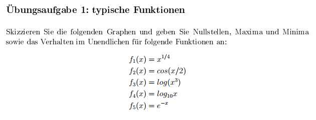
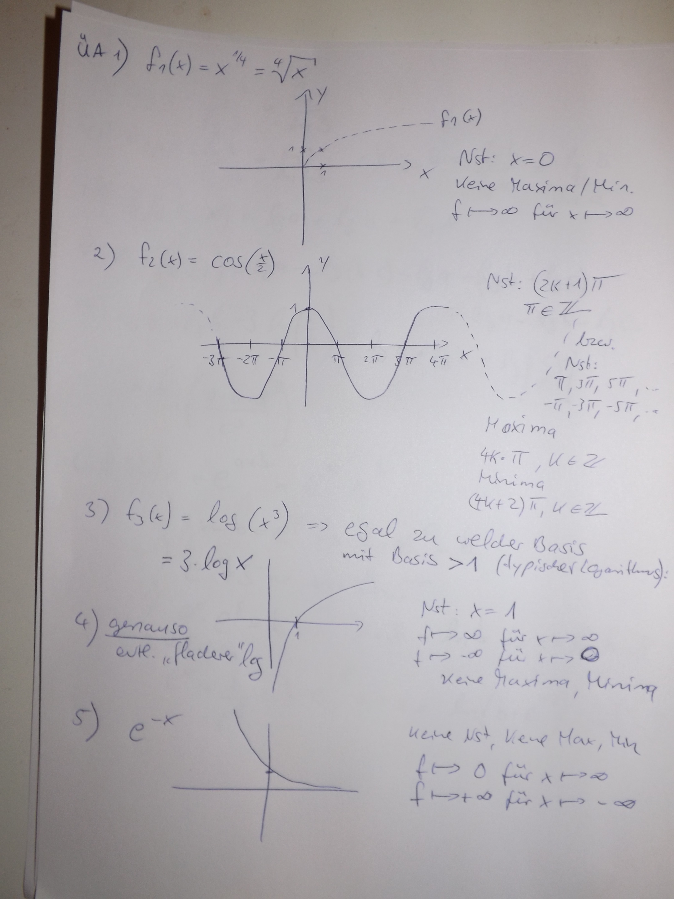
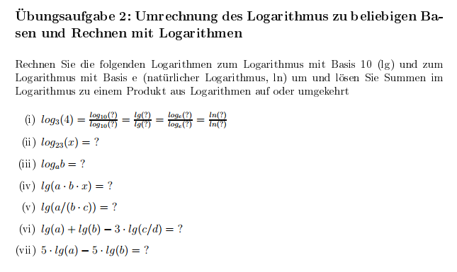
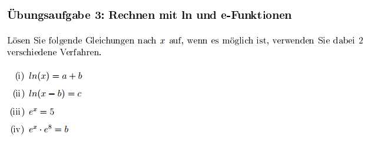
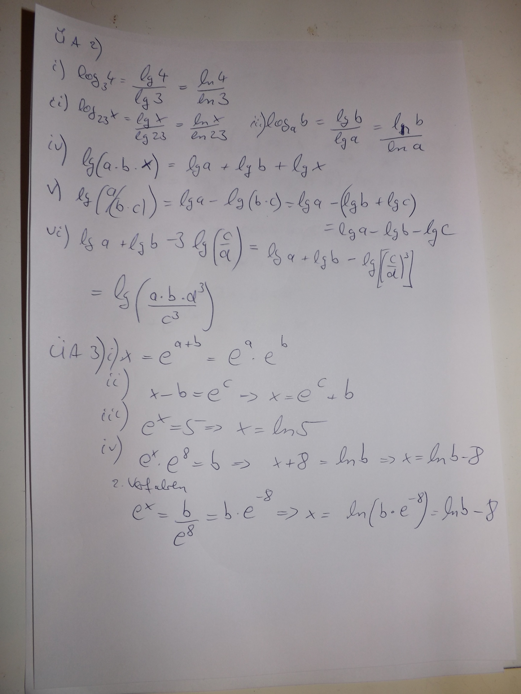
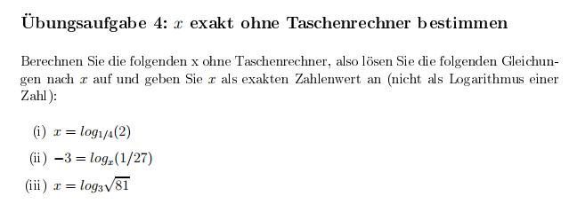
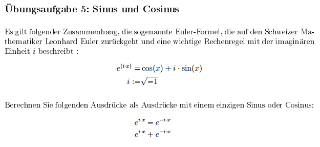
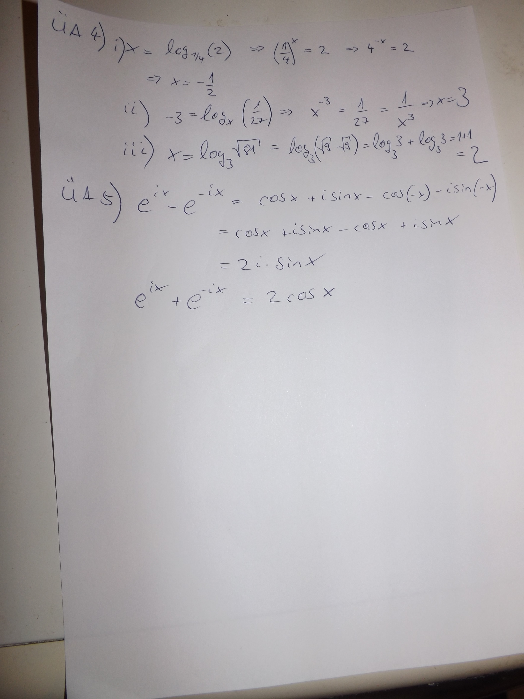

Die Übungsaufgaben sind dazu gedacht, Ihnen zu zeigen, wie die
Methoden, die in der Vorlesung vorgestellt wurden, in Anwendung
gebraht werden. Sie erhalten die Lösungen hierzu entweder in den
Tutorien oder auf der ISIS-Seite des Kurses als Dokument oder
Lehrvideo. Das erste Übungsblatt ist eine Rekapitulation von
typishen Funktionen und deren grundlegender Eigenshaften, die Sie
bereits in der Schule kennengelernt haben. Diese Grundlagen sind
eine elementare Voraussetzung zum Verständnis der aufbauenden
mathematishen Gesetzmäÿigkeiten.
Allgemeines Erklärvideo zu Logarithmen
Allgemeines Erklärvideo zu Logarithmen von Jörn
Loviscach.
1. Übungsaufgabe

Übungsblatt 1; Übungsaufgabe 1
Musterlösung zur 1. Übungsaufgabe

Übungsblatt 1; Übungsaufgabe 1
2. Übungsaufgabe

Übungsblatt 1; Übungsaufgabe 2
Video zu Übungsaufgabe 2
Video zu Übungsaufgabe 2 - Umrechnung von Logarithmen
zu verschiedenen Basen.
3. Übungsaufgabe

Übungsblatt 1; Übungsaufgabe 3
Musterlösungen zur 2. und 3. Übungsaufgabe

Übungsblatt 1; Übungsaufgabe 2+3
4. Übungsaufgabe

Übungsblatt 1; Übungsaufgabe 4
Video zu Übungsaufgabe 4
Video zur Rechnung mit Logarithmen.
5. Übungsaufgabe

Übungsblatt 1; Übungsaufgabe 5
Musterlösungen zur 4. und 5. Übungsaufgabe

Übungsblatt 1; Übungsaufgabe 4+5
Einige Werte und Merkregeln zu trigonometrischen Funktionen